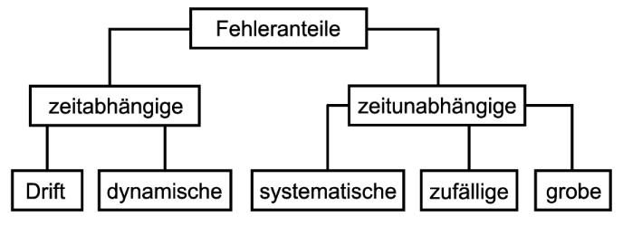

4 Fehlerrechnung
eventuell noch vor hooke.qmd - dann Einleitungstext ändern. In den vorausgehenden Kapiteln haben wir mit der statistischen Beschreibung der empirischen Streuung von Messdaten einem (nämlich dem kompliziertesten) Teilbereich der Fehlerrechnung eingeführt. Bei der Auswertung von Sensordaten kann jedoch eine Vielzahl von Fehlerarten auftreten und zusammenwirken.
Siehe Musterbericht WA S. 12-13
**Notiz: Größtfehler der linearen Regression = Absolutbetrag des größten Residuums. abs(beobachteter Wert - Vorhersage)
4.1 Fehlerarten und Umgang mit Messfehlern
Folgende Fehlerarten lassen sich unterscheiden:

zeitabhängige Fehler
- Drift: Änderung der Ausgangsgröße eines Messgeräts bei konstanter Eingangsgröße, z. B. durch Alterung der Bauteile, Änderungen der Umgebungstemperatur oder Luftfeuchtigkeit.
- dynamische Fehler: zeitliche Veränderung der Messgröße, z. B. der Körpergröße im Tagesverlauf (langsam) oder der Partikelanzahl in einem Luftstrom (schnell), die von (digitalen) Messgeräten nur in einem bestimmten Intervall (Quantifizierungsfehler) und / oder mit einer Verzögerung (z. B. Einschwingzeit) gemessen werden können.
zeitunabhängige Fehler
- systematische Fehler: unter identischen Bedingungen konstante, d. h. nach Betrag und Vorzeichen gleiche, Verzerrung der Messergebnisse durch Fehler der Messgeräte (Genauigkeit des Messgeräts, bspw. in Abhängigkeit von der Temperatur, fehlerhafte Kalibrierung) oder die Art der Messung (bspw. Ablese- und Skalenfehler bei Volumenbestimmung mittels Eimer mit Literteilung)
- zufällige Fehler: statistische Streuung der Messwerte um ihren Erwartungswert (z. B. Stichprobenfehler)
- grobe Fehler: Verfälschen der Messergebnisse durch falschen Versuchsaufbau, ungeeignete Messgeräte, falsches Ablesen, Unachtsamkeit (z. B. Mitwiegen des Gefäßes)
Das ist auch eine gute Quelle: https://www.ipc.kit.edu/download/Messwerte_und_ihre_Fehler_April2016.pdf
Auch andere Einteilungen sind möglich. Beispielsweise können zeitabhängige Fehler auch den systematischen Fehlern zugeordnet werden. Für den Umgang mit unterschiedlichen Fehlern bietet sich die Unterteilung in grobe, systematische und zufällige Fehler an.
Grobe Fehler: betroffene Werte streichen und Messung wiederholen.
Systematische Fehler: Systematische Fehler sollten, wenn sie bekannt sind, korrigiert (bspw. temperaturabhängige Genauigkeit des Messgeräts) oder quantifiziert (bspw. Genauigkeit des Ablesens) werden.
Zufällige Fehler: Die statistische Streuung von Messwerten um den Erwartungswert sollte quantifiziert werden.
4.2 Methoden zur Fehlerabschätzung
Das Ziel der Fehlerabschätzung ist es, Unsicherheitsintervalle für die gemessene Größe zu ermitteln. Dafür stehen verschiedene Methode zur Verfügung:
- Fehlerabschätzung
- Fehlerstatistik
- Lineare Fehlerfortpflanzung
- Gauß’sche Fehlerfortpflanzung
Nach DIN soundso soll man nicht mehr von Fehlern, sondern von Messabweichung sprechen. Aber es sind Fehler. Größtfehler lassen wir erst einmal raus.
Fehlerabschätzung
Die Fehlerabschätzung wird verwendet, wenn eine Größe nur einmal gemessen wird. In die Fehlerabschätzung eines einzelnen Messwerts gehen ein:
- die Garantiefehlergrenze des Messgerätes (das vom Hersteller auf dem Gerät oder in der Bedienungsanleitung angegeben ist) und
- ein abgeschätzter Anteil, der sich nach den konkreten Bedingungen des Experiments, etwa der Skalenteilung des Messgerätes oder den Ablesebedingungen (bspw. eine analoge Skala konnte nur aus einem Winkel abgelesen werden) richtet.
Die Fehlerabschätzung versucht nicht, die Ungenauigkeit der Messung, also die Abweichung des Messwerts vom wahren Wert der gemessenen Größe (der unbekannt ist), zu quantifizieren. Vielmehr geht es darum, die maximal mögliche Abweichung des Messwerts vom tatsächlichen Wert zu bestimmen, den Größtfehler \(\Delta x\) (Delta x). Deshalb werden die Beträge der einzelnen Fehler addiert.
Beispiel Messbedingungen
Die konkreten Bedingungen eines Messvorgangs können sehr unterschiedlich sein. Dies wird anhand von zwei Messvorgängen demonstriert.
Hier können Sie mitmachen! Sie benötigen:
- ein geeignetes Messinstrument, z. B. ein Lineal, und
- eine Münze (idealerweise 1-Euro-Münze).
Im ersten Messvorgang soll der Durchmesser der 1-Euro-Münze bestimmt werden. Im zweiten Messvorgang bestimmen Sie die Länge Ihres Daumens. (Der Daumen besteht anatomisch aus nur 2 Fingergliedknochen
Erster Messvorgang: Münze
Die Messung wird mit einem Messschieber mit Nonius 0,05 nach DIN 862 durchgeführt. Die DIN 862 normiert Fehlergrenzen von Messschiebern. Die Fehlergrenze ist abhängig von der Skalengenauigkeit des Messschiebers sowie von der gemessenen Länge und ist aus einer Tabelle abzulesen.
Messergebnis: \(x = 23,25 mm\)
- Die Skaleneinteilung ist 0,05 mm, der Ablesefehler beträgt also 0,025 mm.
- Fehlergrenze nach DIN 862 beträgt 50 \(\mu m\) oder 0,05 mm.
In Summe ergibt sich ein Größtfehler \(\Delta x = 0,025 mm + 0,05 mm = 0,075 mm\).
Das Messergebnis und das Fehlerintervall betragen also: \(23,25 ± 0.075 mm\)
Bestimmen Sie mit Hilfe eines Lineals .) (Wo beginnt der Daumen? Wo endet die weiche Fingerkuppe [oder zählt der Nagel?])
Ablesung auf Schieblehre mit Nonius: 64,7 mm - Genauigkeit der Skala ist 0.05 mm - d. h. Ablesefehler ist 0.025 mm
Der Größtfehler quantifiziert den ungünstigsten Fall, bei dem sich alle möglichen Fehlerquellen addieren.
halber Skalenstrich (ein ganzer geht aber auch, z. B. wenn man schief abgelesen hat oder automatisch, wenn man ein digitales Messgerät nutzt.)
Callout Beispiel: Thermometer
Größtfehler bei Messung mehrerer fehlerbehafteter Größen: Fehlerfortpflanzung
https://www.uni-ulm.de/fileadmin/website_uni_ulm/nawi.inst.225/teaching/Grundpraktikum/Fehlerrechnung/Einfuehrung_FehlerrechnungHankelPaul.pdf
die Garantiefehlergrenze des Messgerätes (vom Hersteller gegeben - siehe Bedienungsanleitung) - ein abgeschätzter Anteil, der sich nach der Sorgfalt des Experimentierens, konkreten Bedingungen des Experiments, der Skalenteilung des Messgerätes u.ä. richtet.
Der Größtfehler \(\Delta x\) setzt sich zusammen aus dem systematischen Fehler und dem zufälligen Fehler.
- systematische Fehler: Fehler der Messgeräte, der Art der Messung (bspw. Genauigkeit Abstandssenor) –> sollten, wenn sie bekannt sind, korrigiert werden!
- das ist die Küchenwaage, deren systematischer Fehler auf \(\frac{g}{\Delta x} = \frac{9.81}{\Delta x}\) ? Was ist Delta-x, die Ausdehnung?!
- Die Masse wäre 705g –> müsste die Messungenauigkeit der Küchenwaage mit 0.5 g nicht ins Verhältnis zu 705 g gesetzt werden?
- das ist die Küchenwaage, deren systematischer Fehler auf \(\frac{g}{\Delta x} = \frac{9.81}{\Delta x}\) ? Was ist Delta-x, die Ausdehnung?!
- zufällige Fehler: Streuung von Messwerten um Erwartungswert –> sollten quantifiziert werden.
Hier Gauß’sche Fehlerfortpflanzung und Größtfehler
- der Größtfehler bezieht sich auf einzelne Werte bzw. wird auf alle Werte einer Messreihe einzeln angewandt
- der Größtfehler kann aber auch für eine ganze Messreihe bzw. die lineare Regression angegeben werden.